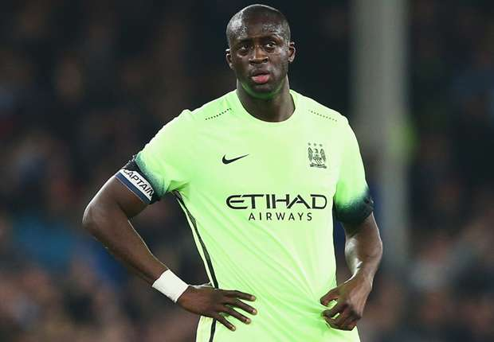

Dimitri Payet accomplit une saison pleine avec West Ham. (Reuters) Deux Français figurent parmi les six nommés pour le titre de meilleur joueur de la saison en Premier League. Dimitri Payet (West Ham) et N'Golo Kanté (Leicester City) accompagnent Jamie Vardy et Riyad Mahrez (Leicester City), ainsi que Harry Kante (Tottenham) et Mesut Özil (Arsenal). Déjà désigné meilleur joueur évoluant d'un club londonien cette saison, le Réunionnais traverse actuellement la meilleure période de sa carrière (9 buts et 8 passes décisives). Ce qui lui a valu d'être rappelé en équipe de France, avec laquelle il pourrait participer à l'Euro. Quant à son compatriote originaire du Mali, il a survolé la saison au milieu chez les Foxes, qui s'apprêtent à remporter le premier titre de leur histoire. L'ancien Caennais est une vraie révélation, qui n'est pas passée inaperçue non plus aux yeux de Didier Deschamps. Enfin un successeur à Thierry Henry ? Le vainqueur succédera à Eden Hazard, sacré l'an dernier, dans la foulée du titre de Chelsea. Plus aucun Français n'a remporté ce trophée depuis Thierry Henry en 2004. Auparavant, David Ginola (1999) et Eric Cantona (1994) avaient également obtenu cette distinction individuelle, décernée par les joueurs du Championnat anglais eux-mêmes, regroupés au sein de leur association (PFA).
Tout en reconnaissant qu'il n'a plus ses jambes de vingt-ans, Manuel Pellegrini a jugé que Yaya Touré est encore performant et qu'il ne mérite pas les critiques dont il fait objet. Manchester City a signé un grand coup ce samedi en laminant Chelsea sur ses terres (3-0). Ce fut une belle démonstration de force mais tous les joueurs des Eastlands n'ont pas évolué au même niveau. Parmi ceux qui ont déçu il y a Yaya Touré. L'Ivoirien est encore apparu très emprunté et cela lui a valu de nombreuses piques dès la fin de la rencontre. Manuel Pellegrini a eu vent des critiques à l'encontre de son joueur. Naturellement, il a cherché à le défendre, même si, à demi-mot, il a reconnu que l'ancien Barcelonais n'a plus son rendement d'antan : "quand il ne joue pas et qu'on gagne, tout le monde dit qu'il ne doit pas jouer. On a joué et perdu sans lui. Il continue d'être un joueur important. Malheureusement, il vieillit mais il sait quelles critiques sont importantes et lesquelles ne le sont pas".